Fine Art & Illustration
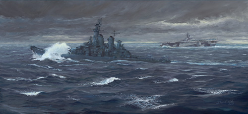
USS New Jersey, with her camouflage Measure 21 (Navy Blue overall with dark blue decks) and USS Hancock as part of Task Force 38 sailing off the Philippines on Nov 8, 1944, During Typhoon Cobra or Halsey's Typhoon.
Typhoon Cobra, also known as the Typhoon of 1944 or Halsey's Typhoon (named after Admiral William Halsey Jr.), was the United States Navy designation for a powerful tropical cyclone that struck the United States Pacific Fleet in December 1944, during World War II. The storm sank three destroyers, killed 790 sailors, damaged 9 other warships, and swept dozens of aircraft overboard off their aircraft carriers.
For this painting I set myself the challenge of not using any grid
Detail of USS New Jersey crashing through the swell.
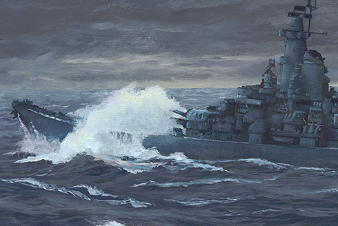
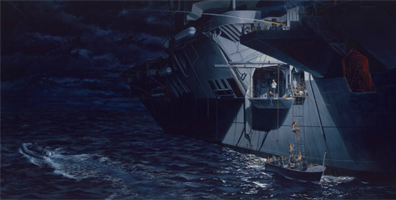
Client: MG99
A group of 99 South Vietnamese refugees is assisted aboard HMAS MELBOURNE by Royal Australian Navy sailors.
Boats from HMAS MELBOURNE (R21) and HMAS TORRENS (DE53) ferry refugees from the stricken NGHIA HUNG adrift in the South China Sea, 21 June 1981. This group of men, women, children and infants was officially designated as MG99.
Detail of HMAS MELBOURNE's Utility boat disembarking Vietnamese refugees.
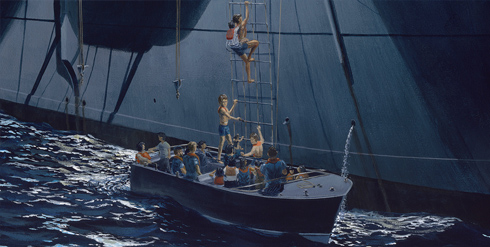
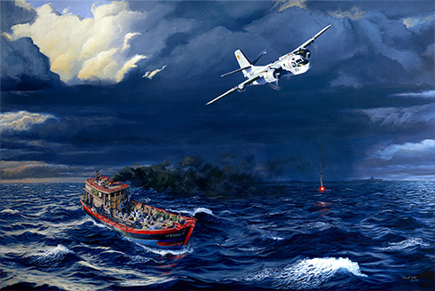
Client: MG99
RAN Tracker 851 over the NGHIA HUNG adrift in the South China Sea, 21 June 1981.
All 99 South Vietnamese refugees on board the stricken vessel were safely rescued by HMAS MELBOURNE (R21) and HMAS TORRENS (DE53) later that night.
This group of men, women, children and infants were officially designated as MG99.
It was a very moving ceremony at the 40th anniversary of the MG99 rescue. It was also a chance to reunite Vietnamese refugees and the Royal Australian Navy officers and sailors who rescued them.
It was an honour to be there, and an emotional time for all to hear the stories from the refugees and the sailors who were there.
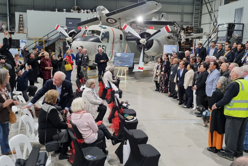
Detail of Tracker 851.
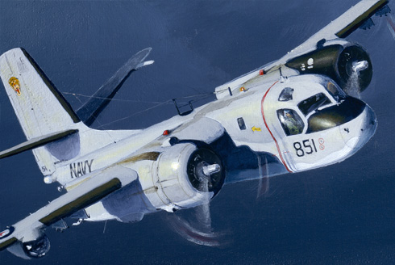
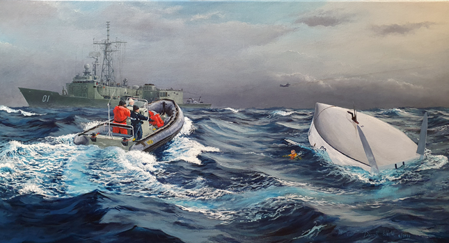
'The life line' depicts the moment Tony Bullimore is sighted, emerging from his upturned yacht in the Southern Ocean, January 1997.
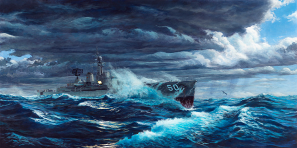
Client: Personal
This is a personal piece that was entered in the Australian Society of Marine Artists' 20th Anniversary Exhibition in Sydney, 14 October 2016.
One of my favourite memories from serving in the Royal Australian Navy is a time on HMAS Swan. We were in the Southern Ocean, in company with HMAS Torrens, and it was a very rough day!
read more...I was on watch and there wasn't much to do until the Officer of the Watch handed me a signal to send to Torrens. I was about to reach for the voice radio, then thought “no, that's too easy”. I went out onto the bridge wing, fired up the 10-inch light and called up Torrens.
The signalman on Torrens must have been very unhappy, being called out of a nice warm bridge. As I was sending the signal, I could feel the ship rise over the crest of a wave and I knew we where about to 'dig' into the next one.
As the ship did, a mass of water burst into the air and I remember a wall of spray passing over me as I sent the signal. I often wondered what the view would have been like from Torrens. This painting is an attempt to visualise that moment.
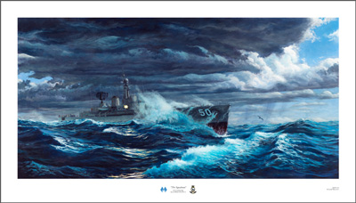
Price: $270.00 AUD which includes postage within Australia or New Zealand.
Dimensions: Image is 65cm X 32.5cm plus border and title area.
Details: 225gsm Watercolour paper, the title is accompanied with 'crossed Juliets' (Signalmans rate badge) and HMAS Swan crest.
For purchases and payment options, please contact the artist.
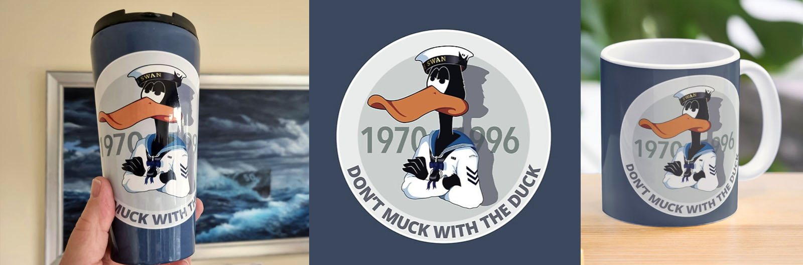
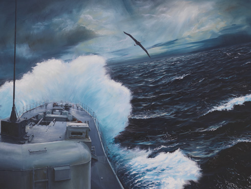
Client: Personal
As the Destroyer Escort crashes through southern seas, a solitary albatross glides on the winds that whip up the white caps and chill the sailors keeping watch on the upper deck. Albatrosses spend most of their life soaring above the seas, with the sighting of an albatross by sailors considered a good omen.
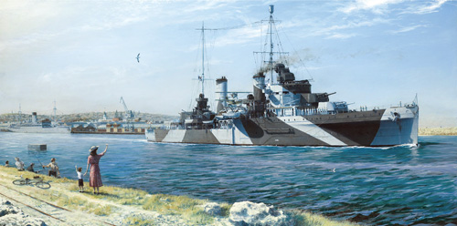
Client: West Australian Cricket Association
HMAS Sydney II departs Fremantle inner harbour.
It is a serene scene looking over Fremantle from North Mole. Wharfies taking time out to fish are joined by a woman and child to watch the sleek lines of HMAS Sydney slip by, her crew lining the decks.
At a dedication ceremony at the WACA, the painting was unveiled 11 November 2011 to coincide with the day, 70 years ago, Sydney departed from Fremantle.
read more...It's a clear November morning and Sydney has left H wharf and is sailing out to a buoy in the outer harbour. She leaves behind Fremantle port as it begins to buzz with its daily activity.
MS Charon, berthed alongside B shed, takes on stores as the smoke from a steam train at Fremantle Station drifts over the neighbouring buildings. In the distance, the memorial on Monument Hill catches the morning light as it watches over the town of Fremantle as it prepares for the commemoration of Armistice Day, 11 November 1941.
The painting was commissioned by the West Australian Cricket Association (WACA) to form part of their HMAS Sydney II Commemorative Display.
My intention was to create a piece that conveys an emotional sense of what was happening the day Sydney sailed, as historically accurate as possible.
With our knowledge of the events that were about to unfold, the juxtaposition of Sydney and a typical day in Fremantle creates tension in the viewer. We can also admire the ship and her company for the courage and inspiration they gave to the Australian people in the early war years, becoming a symbol of strength in an increasingly turbulent time.
Detail of HMAS Sydney II painting.
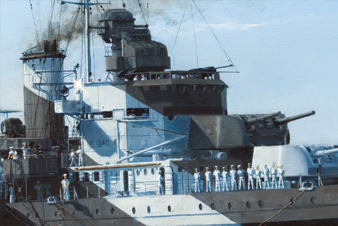
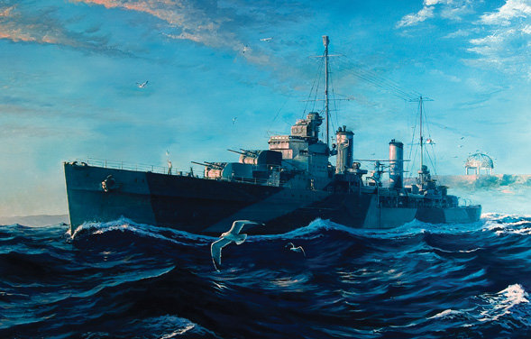
Client: Geraldton Navy Cadets - fund raiser.
HMAS Sydney II sails towards the sunset as the gulls from the Dome of Souls come to life and escort the light cruiser on her last voyage.
Created for TS Morrow, Geraldton Navy Cadets, to comemorate the finding of the Sydney II and the Kormoran. The original was raffled to raise funds for the Cadets.
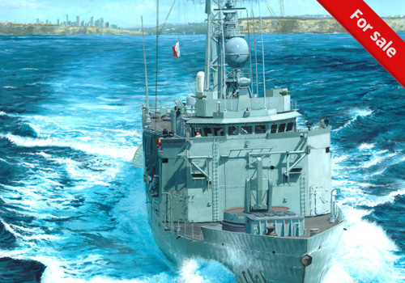
Client: Personal
HMAS Sydney FFG 03
Specials have fallen out, watches have closed up and it's down to business. Flag Hotel is brought to the dip in preparation for helicopter operations as HMAS Sydney steams away from the city of her namesake.
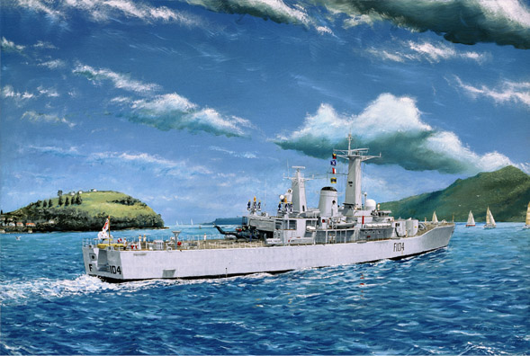
Client: Brother
HMNZS Southland F104 heads out of Waitematā Harbour.
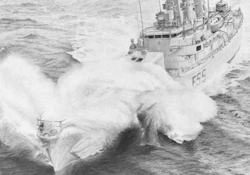
Client: Personal
HMNZS Waikato F55
Created to commerate the decommissioning of HMNZS Waikato, the original was given to my father who was commissioning crew. My brother and I were also christened onboard her in the 1970's. So this ship holds a special place in our families heart.
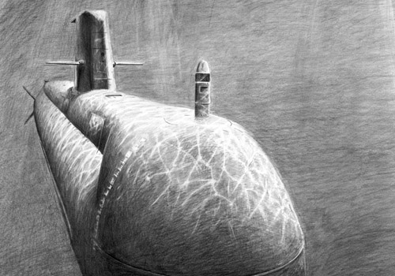
Client: Personal
Collins class submarine
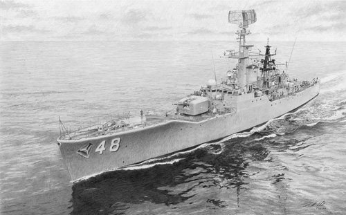
Client: Personal
HMAS Stuart D48 cruising "up top".
One of my 19 or so pencil works depicting Royal Australian Navy ships or World War II bombers.
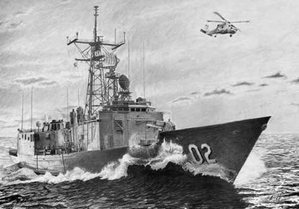
Client: Personal
HMAS Canberra FFG 02 at speed.
I spent a couple of days on her back in the mid 90's. I cross-decked (temporary transfer) from HMAS Westralia from Thailand to Singapore. It was a fantastic experience, especially the high speed breakaway after the replenishment at sea (RAS) from Westralia.
TThis is the second ship drawing I've ever created, following Homeward Bound. It's a piece I'm truly proud of and one of the rare ones I genuinely enjoyed working on—not just completing!
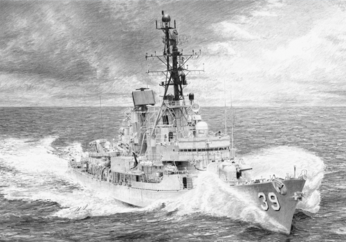
Client: Personal
HMAS Hobart DDG 39 at speed.
The title comes from her nick-name, earned during the Vietnam War. One of my 19 or so pencil works depicting Royal Australian Navy ships.
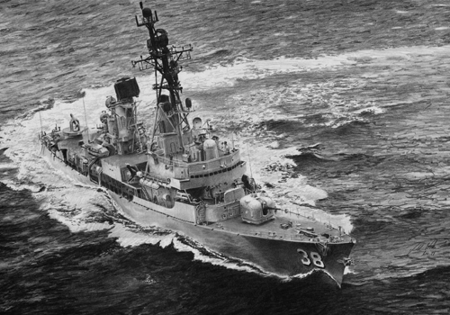
Client: Personal
HMAS Perth DDG 38.
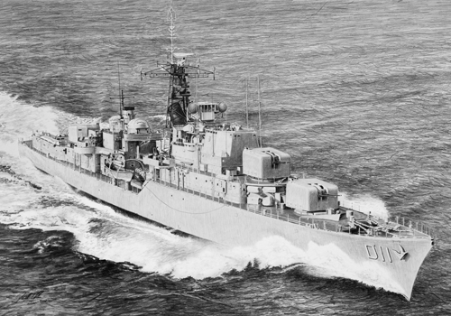
Purchased by: The Australian National Maritime Museum.
HMAS Vampire D11.
HMAS Vampire with her original open bridge at speed.
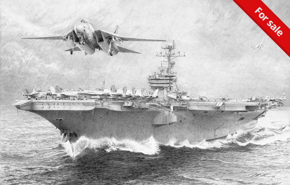
Client: Personal
USS John F. Kennedy CVN 79.
During Gulf operations, a Gruman F-14 Tomcat of the Pukin' Dogs squadron is catapulted from her deck.
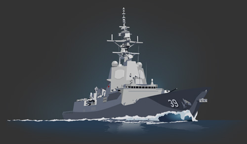
Digital artwork of HMAS Hobart III adorning multiple items.
Born in Auckland, New Zealand, Darrell moved to Perth in the mid-1980s with his family. Although he had a passion for drawing and painting from an early age, he followed in his parents' footsteps and pursued a career in the Navy.
As a signalman, Darrell served on several Australian Naval ships, including HMAS Westralia and HMAS Swan. In between watches, Darrell continued with his passion for drawing, leading him to produce art works frequently mistaken for photographs. One of his first photo-realistic pencil drawings was of HMNZS Waikato, a ship that is close to his family's heart; his father was part of the commissioning crew and both Darrell and his brother were christened on-board.
After leaving the Navy in 1997, Darrell traveled throughout Europe and the UK, returning to Australia to enroll at the WA School of Art, Design and Media. Graduating in 2002 with an Advanced Diploma in Graphic Design and Multimedia, Darrell continued with his drawing and expanding his range of prints.
Over the years he moved from pencil to oils and acrylics. The National Maritime Museum of Australia purchased two of his pencil drawings for their collection. The West Australian Cricket Association commissioned an oil painting of HMAS Sydney II, as part of their 'Lest we forget' display. This painting has subsequently appeared in several publications on the Sydney.
Another side of his work includes a large range of illustrations for the Western Australian Department of Environment and Conservation. These adorn promotional material, activity books for kids, signage and even playground equipment.
Darrell now resides in Melbourne, Australia with his wife and children and continues to produce works for clients around the world.
Send me a message and I'll get back to you soon.